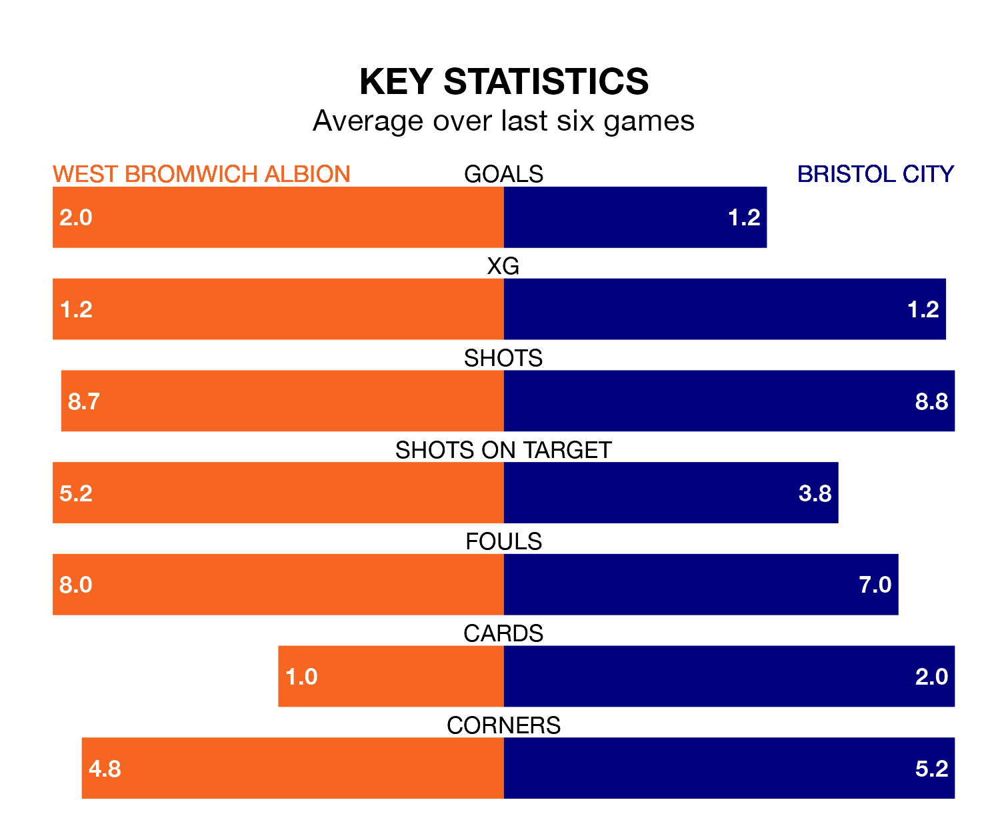

Two of EFL Championship's meanest defences go head-to-head at the Hawthorns on Saturday, when West Bromwich Albion host Bristol City.
Only two sides – Leeds United and Leicester City – have conceded fewer goals than West Bromwich to date: the home side have let in just 36 goals in 37 games.
The Robins have conceded 43 goals in 37 games, giving them the joint-fourth tightest back line so far this season.
Key to the Baggies' home form has been Alex Palmer, who has allowed 0.89 goals past him per 90 minutes, compared to 1.03 for Max O’Leary in the opposite net.
In the last 10 years, West Bromwich and City have played each other on 12 occasions. West Bromwich won six of them, City three, and they drew three times.
On average, the Baggies scored 1.9 goals and the Robins 1.2 in those matches.
Their last meeting was on September 16, when they played out a 0-0 draw.
West Bromwich are fifth in the table after 37 games, of which they have won 18 and drawn nine, earning 63 points.
City are eight places behind Albion in 13th, with 13 wins and eight draws putting them on 47 points.
The Baggies are in reasonable form in EFL Championship, with three wins and two draws from their last six games.
With two wins and four losses over that period, the Robins' form is worse – they have taken six points from 18, compared to the hosts' 11.
West Bromwich's last match was on Sunday, a 4-1 win against Huddersfield Town, with Michael Andrew Johnston (two), Kyle Bartley and Okay Yokuşlu getting the goals for the Baggies.
City beat Swansea City 1-0 last time out, also on Sunday, with Robert Dickie on the scoresheet.
Saturday's match will be refereed by Tom Nield, who has taken charge of nine EFL Championship games so far this season, issuing no red cards and booking 34 players. He has awarded one penalty.
The last West Bromwich game Nield refereed was a 3-0 away win against Plymouth Argyle on February 20. His last City match was their 1-0 loss at home against Millwall on January 1.
Updated: 15:10 (UTC), 15/03/24